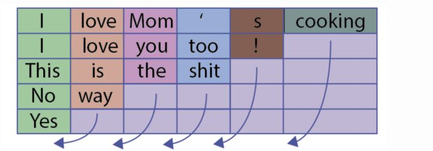
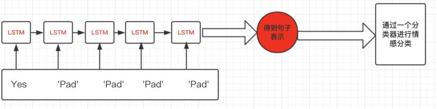
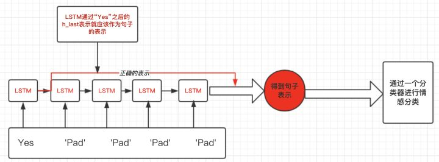
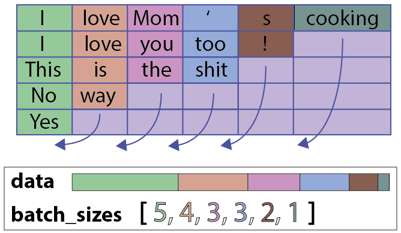

PyTorch 中处理序列的输入输出时，由于一个 batch 中的序列长度不一样，需要对输入输出进行“打包”(
pack)和“解包”(unpack)的操作，主要用到pack_padded_sequence和pad_packed_sequence这两个函数。
对于序列输入，处理起来的一个难题在于输入是一个一个 batch 喂给模型的，而大多数情况下一个 batch 中的各个样本长度不相同。有人说做 padding 不就行了吗？直接以长度最长的那个句子为标准，剩下的用 0 pad 到这个长度，但这样会有什么问题呢？
举个例子，这个 batch 中有 5 个句子：

所有句子都被 pad 到了长度为 6，最短的 “Yes” 添加了 5 个 padding value，于是经过 RNN 得到的句子表示是有偏差的：

我们期望得到的句子表示是在 padding value 输入之前的 hidden value，比如下图中处理完 “Yes” 之后的输出：

pack_padded_sequence()和pad_packed_sequence()这两个函数就是用来完成这个目标的。
pack_padded_sequence
torch.nn.utils.rnn.pack_padded_sequence(input, lengths, batch_first=False, enforce_sorted=True)
Parameters:
- input(
Tensor): 输入序列 batch，已经 pad 过了，shape: [T, B, *]，其中 T 是 batch中最长的序列长度 - lengths(
Tensor): 各个序列的长度 - batch_first(
bool): 如果是True的话，input 的 shape 就要变为[B, T, *]，第一维表示 batch 中序列的 index - enforce_sorted(
bool)：如果是True的话，序列就需要从长到短排好序
input 经过这个 pack 打包操作之后，得到的是一个PackedSequence对象，这是一个包含data和batch_sizes的类，直观上来看它们是由原来 pad 好的input这样得到的：

从这个角度来看，pack 也可以说是“压缩”，将除去 padding value 的部分压紧。得到 pack 过后的 input 就可以喂给 RNN 了。
示例如下：
1 | import torch.nn.utils as utils |
这里 h_t 就是每个句子只经过原本的长度得到的隐层表示，而不是经过后面一大片 padding value 的值。
pad_packed_sequence
刚刚的示例中，pack 过后的 input 输入 RNN 中得到的输出 out 还是一个PackedSequence对象，一个句子的隐层表示并不连在一起，难以进行下一步操作，所以还需要解 pack 操作，将它变为和输入类似的带有 padding value 的Tensor：
torch.nn.utils.rnn.pad_packed_sequence(sequence, batch_first=False, padding_value=0.0, total_length=None)
Parameters:
- sequence(PackedSequence): 就是 pack 过的对象，一般是经过 RNN 的 output
- batch_first(
bool): 如果是True的话，得到的Tensor的 shape 为[B, T, *]，第一维表示 batch 中序列的 index，T 是 batch中最长的序列长度 - padding_value(
float): 很好理解，padding 用的值 - total_length(
float): 如果有的话，所有样本的输出都会被 pad 到这个值，而不是T。这在多 GPU 训练的时候用得到
从参数就可以看出，这个函数是上面pack_padded_sequence的逆操作，pack_padded_sequence的输入是pad_packed_sequence的输出，后者的输出是前者的输入。
示例：
1 | padded_output, lengths = utils.pad_packed_sequence(outputs, batch_first=True) |
注意，上面有个total_length参数，这个在正常单卡训的时候完全用不到，但是多卡的情况下就不一样了，每块卡拿到的都是总体 batch 的一个小部分，都只 pad 到这块小 batch 中的最大长度，而经过 RNN 之后，如果不指定整个 batch 的最大长度(total_length)，得到的padded_output是没法整合成一个Tensor的。
其它 pad/pack 函数
PyTorch 还提供了对Tensor序列进行 padding 的pad_sequence函数：
1 | a = torch.ones(25, 300) |
甚至直接从没有 pad 过的Tensor序列进行 pack 的pack_sequence函数：
1 | a = torch.tensor([1,2,3]) |
这里直接放官方文档示例了。这两个函数的用法很简单，可以省去一些手动加 padding 和 pack 过程，直接从输入的句子Tensor序列得到PackSequence。